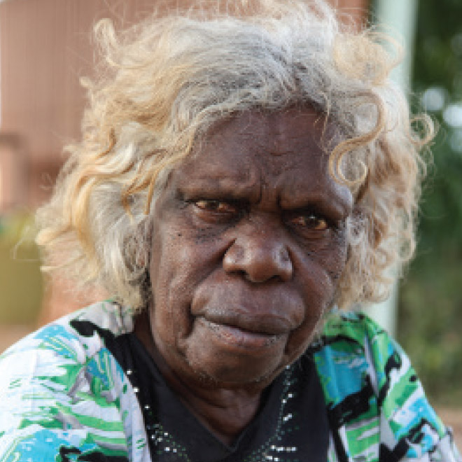
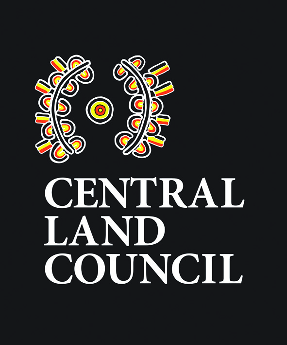
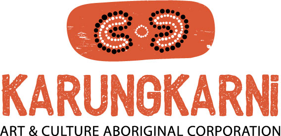
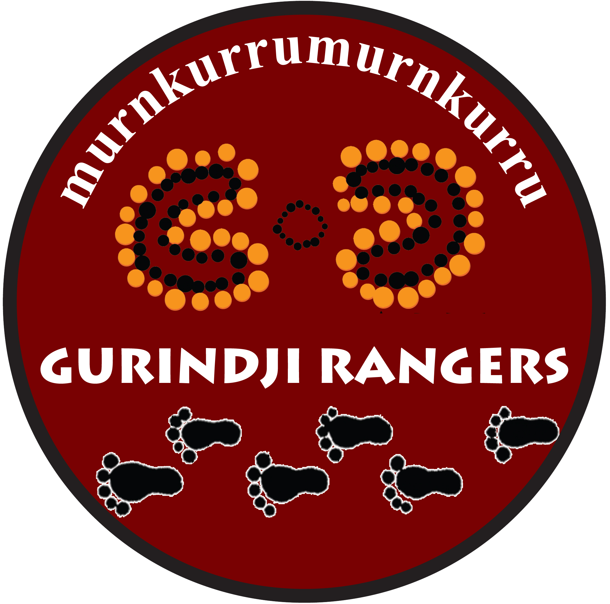

Speaker information
The speaker in all of the audio for Jurlaka is Violet Wadrill.

Violet Wadrill was born in 1942 and is a traditional owner of Jutamaliny. She has worked extensively with linguists on the documentation of Gurindji language and culture, including a dictionary, ethnobiology and a number of volumes of collected texts including 'Yijarni: True Stories from Gurindji Country' (2016). She also paints her traditional country, Jutamaliny, and makes tradition- al artefacts such as coolamons and nulla nullas. Her work demonstrates a passion for the maintenance of Gurindji traditions. Violet was a finalist in the ICTV Australian Digital Storytelling Awards 2018 and VIP guest speaker at the NT Writers Festival in 2019. She won the 2024 Prime Minister's Literary Award for Children's Literature for 'Tamarra: A Story of Termites on Gurindji Country' (2024).
Credits and rights
Gurindji and English by Ronnie Wavehill Wirrba Jangala, Violet Wardill Nanaku, George Sambo Jangala, Serena Donald Nimarra, Kenny Ricky Janama, Wilemina Frith Nangari, Ursula Chubb Nangala, Helma Bernard Nyanyi, Cassandra Algy Nimarra and Felicity Meakins.
The cultural signs research was undertaken as a part of the Central Land Council (CLC) ranger program coordinated by Elise Cox. This project based on the Cultural Signs research, undertaken by Myfany Turpin. The work and publication costs were funded by the CLC. This project was also supported by the School of Languages and Cultures at the University of Queensland and relied heavily on previous bird identification work by Glenn Wightman. Many thanks also to Myfany Turpin for her assistance with this project. Website created by Ben Foley and Abigail Davis.
Copyright © Karungkarni Art and Culture Centre. All rights reserved.
The information on this website remains the Intellectual Property of Gurindji People under ICIP. No information can be used for commercial purposes without permission.
We sincerely thank all of the photographers who contributed to this resource. All photographs are copyright by the photographers and reproduced with permission.
The bird poster was one of the collection of four Gurindji plant and animal posters which won the 2018 Northern Territory Land Resource Management Award.


